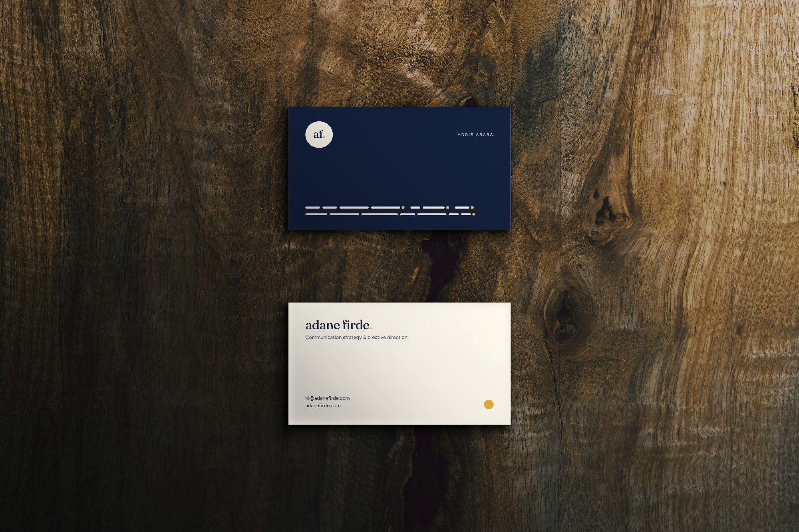

Get tothe point.
Adane Firde, communication strategist in Addis Ababa. I help brands decide what to say, then build the system that keeps saying it.
90 minutes, Br 20,000, credited to your project.
Busy is not clear.
Most brands I meet are not short of content. They are short of a decision. The website, the pitch deck and the Instagram grid describe three different companies, and the team is too busy posting to notice.
Who I work with. Owner-led businesses that have grown faster than their message, brands about to launch or hire an agency, and NGOs with several audiences to serve.
What I do. Strategy first: what to say, to whom, and in what order. Then the creative direction and templates that carry it, so your team can run it without me.
Where. From Addis Ababa, in person or online, Monday to Friday on Addis Ababa time. One client at a time, so you work with me, not a junior.
How to start. One 90-minute Strategy Session for Br 20,000. You leave with a clear next step, and the fee is credited in full if we work together within 30 days.
Try it on your sentence.
Paste the sentence from your website, your profile or your pitch deck. The words that do no work fall away, and you see what is left.
We provide solutions to our customers across Ethiopia.
From 19 words to 8. Eleven did no work. What is left is what you actually said. If it isn’t much, that is where we start.
Prices, before we talk.
| Published in Birr. “From” is the price for the scope described. | Strategy SessionBr 20,00090 minutes | Communication Blueprintfrom Br 465,0005 to 6 weeks | Brand Foundationfrom Br 720,0006 to 7 weeks |
|---|---|---|---|
| Who it is for | Anyone who wants a clear next step | Brands that exist but say too much, or too little | New brands, or ones with nothing to build on |
| What we decide | What to fix first | Your position, your audiences and the one message | Strategy, identity and voice from the ground up |
| You leave with | A written next step | An audit, a message house, a content system and a channel plan | A visual identity, guidelines and a launch plan |
| Your team gets | A clear brief, whoever does the work | A handover workshop, so you run it without me | Templates for social and documents |
| Session fee | Credited if you start within 30 days | Credited in full | Credited in full |
| Book the session | See the Blueprint | See Foundation |
Strategy Session
Br 20,000
- Time
- 90 minutes
- You leave with
- A written next step
- Session fee
- Credited if you start within 30 days
Communication Blueprint
from Br 465,000
- Time
- 5 to 6 weeks
- Who it is for
- Brands that exist but say too much, or too little
- You leave with
- An audit, a message house, a content system and a channel plan
Brand Foundation
from Br 720,000
- Time
- 6 to 7 weeks
- Who it is for
- New brands, or ones with nothing to build on
- You leave with
- A visual identity, guidelines and a launch plan
Smaller steps
- Audit · 6 days · from Br 120,000
- Strategy · 2 weeks · from Br 225,000
- Content & Social System · 2 weeks · from Br 190,000
- Brand Starter · 3 weeks · from Br 95,000
- Retainer · from Br 145,000 a month
- Every service, in full


First, I find what you say now.
I read everything the brand puts out and talk to the people who hear it, then write down the gap between the two.
- Then we choose one thing.
The position, the audience and the message you want repeated. Decided together, written in plain words.
- I make it easy to repeat.
Rules, templates and a content plan, so every post, deck and page says the same thing.
- Your team runs it.
A handover workshop and a short period of direction, until the system holds without me.
Brands I’ve helped get clear.
- Yango EthiopiaCommunication, six years runningRide-hailing and delivery
- Kuriftu Resorts & SpaSocial media strategy, brand guidelinesHospitality
- MendspaceGuidelines, social guide, ongoing supportPilates studio
- Ezih BagsBrand persona, social contentRetail
- Magna PastriesVisual guide, communication guidesFood
- Reach for ChangeSupport for small businessesNonprofit
- IOMCommunication and mediaDevelopment
- Mastercard Foundation · EDGECommunication and mediaDevelopment
- UNFPACommunication and mediaDevelopment
I’m Adane. I help brands say less, and mean it.
I co-founded Youthopians, an agency that makes campaigns, films and content for businesses, NGOs and institutions. That work showed me where brands get stuck: not in production, but in the decision before it.
This practice is the strategy end of that work. One client at a time, the decision first and the creative second. More about me
- Based in
- Addis Ababa, Ethiopia
- Also runs
- Youthopians, co-founder
- Works
- In person or online
What I believe
Three rules
- Clear is kinder than cleverIf your customer can’t repeat it, it isn’t finished.
- Decide before you designThe look follows the decision, never the other way round.
- Leave a system, not a dependencyYou should be able to run it without me.